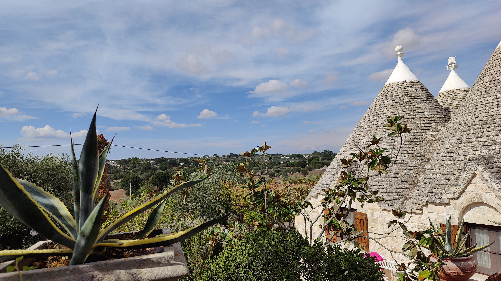

August 2023, I had the incredible opportunity to explore the enchanting region of Puglia in Italy,
and it was a summer escape I’ll never forget. Arriving in Bari, the capital, I was instantly
captivated by the charming old town with its narrow streets and whitewashed buildings. I spent my
days wandering through the bustling markets, savoring freshly baked focaccia, and soaking in the
lively atmosphere of the piazzas.
One of the highlights of my trip was discovering the trulli houses in Alberobello. These unique,
cone-shaped dwellings were like stepping into a fairy tale. I loved strolling through the
cobblestone streets, marveling at the charming architecture and enjoying the local gelato. Each
trullo seemed to tell its own story, adding a magical touch to the experience.
The coastal towns of Polignano a Mare and Ostuni were equally enchanting. Polignano a Mare’s
dramatic cliffs and crystal-clear waters were perfect for a refreshing swim, while Ostuni’s
white buildings gleamed in the summer sun. I spent hours exploring the narrow alleys of
Ostuni, discovering hidden cafes and boutiques, and enjoying the stunning views from the city’s
elevated vantage points.
Puglia’s blend of rich history, stunning landscapes, and warm, welcoming locals made this summer
getaway truly
special. The memories of Puglia will keep me smiling for a long time.
